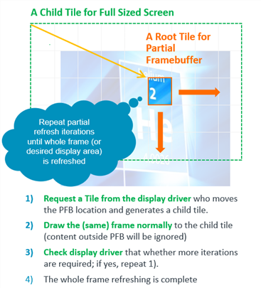
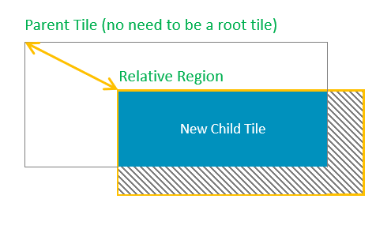
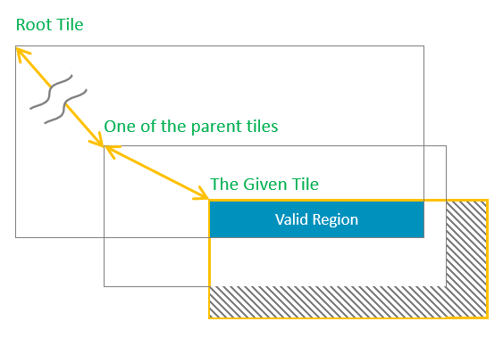
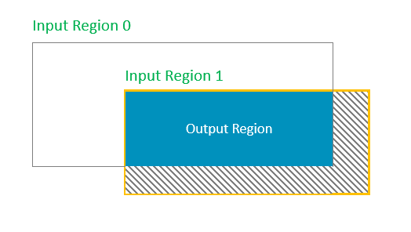
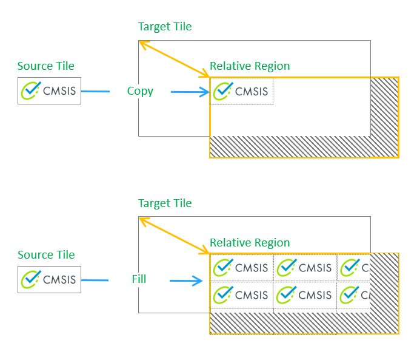
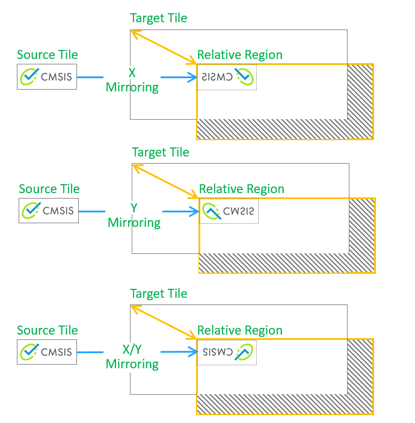
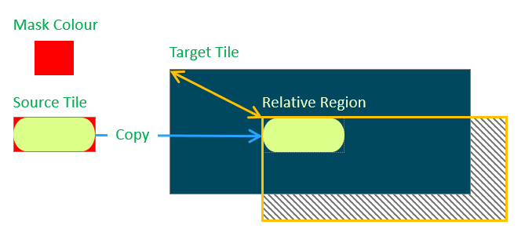

|
Arm-2D
Version 1.0.0-preview
2D Image Processing Library for Cortex-M Processors
|


|
|
Arm-2D
Version 1.0.0-preview
2D Image Processing Library for Cortex-M Processors
|
|
The Tile Operation is the most fundamental API category of the Arm-2d. It consists of three sub-categories:
All related definitions are listed in the interface header file Arm_2d_tile.h and the default C implementation and Helium implementation can be found in Arm_2d_tile.c.
A Root tile is a kind of tiles that directly contain the display buffer, and its feature bit bIsRoot is set, according to the pixel types used in the display buffer to which corresponding pointers should be used.
It is worth emphasizing that for a root Tile, its Location coordinate must be (0,0); otherwise, it is considered illegal.
With the help of C99 designator, a tile structure can be initialised clearly and easily. The following example shows a root tile c_tPictureCMSISLogo representing a RGBA8888 bitmap stored in a constant array called c_bmpCMSISLogo[]. Note that because the bitmap and the tile structure are designated as constants, it is highly likely that a compiler will use ROM rather than RAM to store them and keep a small RAM footprint.
In fact, with the help of some macros, we can use Tile to implement the concept of the so-called visual layer:
For example, we can create two visual layers with size 100*100 and 200*50 respectively and using colour arm_2d_color_rgb565_t for pixels:
These layers are stored in RAM, which are used as sources and targets for 2D operations.
Note that in the aforementioned macro template, we use ARM_NOINIT to decorate the display buffer, its definition is shown below:
It is clear that for the Arm Compiler 5 and Arm Compiler 6, ARM_NOINIT puts the target variable into a ZI section called ".bss.noinit" which later should be placed in an execution region with UNINIT feature in a scatter-script, for example:
All operations in Arm-2D support region clipping by default, which means users don't have to handle window/panel clipping manually. In rare cases where users have to intersect regions and/or tiles, Arm-2D provides dedicated APIs to facilitate such operations.
For more details, please refer to section 4.1.
Paving Texture on a target display buffer is one of the most commonly used 2D operations. Arm-2D supports this with tile copy APIs, in which a copy mode can be specified, and Arm_2D_CP_MODE_FILL is used to enable the texture paving feature.
For more details, please refer to section 4.2.
The so-called Partial Frame Buffer is a special use of the Tile Child scheme. It establishes a root Tile for a tiny rectangular display buffer and derives a Child Tile having the same size as the actual screen. In practice, the GUI software in the upper layer uses the Child Tile (with the full-screen size) to draw graphics and blend visual layers. After completing a frame, the PFB that actually saves the pixel information is sent to the LCD driver for a flush. Since FPB only covers a small area, the drawing process aforementioned, in most cases, will be judged as "no need for actual drawing" and skipped. To display the entire screen, we need to repeat this process continuously and adjust the relative Location between FPB and the Child Tile at the beginning of each iteration. For us, it looks like moving FPB line by line on the screen as shown in Figure 2-4.
Figure 2-4 How Partial Frame Buffer Works

More details are shown in a dedicated example project located in "***examples/partial_frame_buffer***" directory.
Base on the feedbacks collected, design considerations will be documented in the future.
| Topic | Content | Description |
|---|---|---|
| Name | arm_2d_tile_generate_child | Type: function |
| Parameter | const arm_2d_tile_t * ptTargetTile | The address of the target parent tile |
| Parameter | const arm_2d_region_t * ptRegion | The relative region inside the target tile |
| Parameter | arm_2d_tile_t * ptOutput | The address of the new child tile which user should provide. |
| Parameter | bool bClipRegion | Indicates whether clip the region of the new child. |
| Return Value | (arm_2d_tile_t *) non-null | The address of the new child tile provided by the caller. |
| Return Value | NULL | The relative region has no intersection point with the target tile |
The behaviour of function arm_2d_tile_generate_child() is illustrated in the Figure 4.1. This function will generate a child from a target tile based on a given relative region inside the tile. The user has to provide a buffer for the child tile. If there is no intersection between the tile region and the given relative region, i.e. the relative region is out of the tile region, NULL is returned; otherwise, the provided child tile address is returned.
Figure 4.1 How A Child Tile Is Generated From A Parent Tile

| Topic | Content | Description |
|---|---|---|
| Name | arm_2d_tile_get_root | Type: function |
| Parameter | const arm_2d_tile_t * ptTile | a given tile |
| Parameter | arm_2d_region_t * ptValidRegion | The address of a buffer used to store the valid region information |
| Return Value | (arm_2d_tile_t *) non-null | The address of the root tile |
| Return Value | NULL | The given tile has no intersection with the root tile, i.e. the given tile is out of the region its root tile. |
The behaviour of function arm_2d_tile_get_root() is illustrated in Figure 4.2. This function firstly uses the region of a given tile as the initial value of the valid region and repeats the following steps:
Figure 4.2 How A Root Tile Is Retrieved

NOTE: Even if a tile appears inside the root tile, but there could be a string of parents between the target tile and the root, as long as the tile is out of the region of any one of the parents, it is still considered as out of region.
| Topic | Content | Description |
|---|---|---|
| Name | arm_2d_is_root_tile | Type: static inline function |
| Parameter | const arm_2d_tile_t * ptTile | The target tile |
| Return Value | true | The tile is a root tile, i.e. it contains a display buffer |
| Return Value | false | The tile is a child tile, i.e. it has a pointer for a parent tile. |
This function is used to test whether a given tile is a root one or not.
| Topic | Content | Description |
|---|---|---|
| Name | arm_2d_region_intersect | Type: function |
| Parameter | const arm_2d_region_t * ptRegionIn0 | The address of the input region 0 |
| Parameter | const arm_2d_region_t * ptRegionIn1 | The address of the input region 1 |
| Parameter | arm_2d_region_t * ptRegionOut | The buffer of the output region, this address CAN be NULL. |
| Return Value | true | The given two input regions have a overlapping region which is stored in a specified buffer. |
| Return Value | false | The given two input regions have no intersection point. |
The behaviour of function arm_2d_region_intersect is illustrated in Figure 4.3. This function tries to intersect two input regions and output the overlapping area in a user-specified buffer. A Boolean value is returned to indicate that whether two input regions overlap with each other or not. If false is returned, the content in the output buffer is not valid.
NOTE: If you only want to check whether two regions overlap with each other or not, you can omit the region output buffer and use NULL instead.
Figure 4.3 How Region Intersection/Clipping Works

| Topic | Content | Description |
|---|---|---|
| Name | arm_2d_get_address_and_region_from_tile | Type: function-like-macro |
| Parameter | __TILE_PTR | A pointer which points to the start address of the target tile. This macro will update this pointer with the root tile address. |
| Parameter | __VALID_REGION_NAME | The name of the region which will be defined by this macro |
| Parameter | __LOCATION_OFFSET_PTR | The address of a region which is used to store the relative location of the valid region inside the target tile. |
| Parameter | __TYPE | The type of the display buffer |
| Parameter | __BUF_PTR_NAME | The name of the pointer variable which will be defined by this macro |
With a given tile, this function-like-macro declare local variables to store the tile region and the start address of the display buffer.
NOTE:
Tile Copy and Fill operations are mutually exclusive from each other. Their behaviours are illustrated in Figure 4.4.
Figure 4.4 How Tile Copy and Fill Works

In addition to the standard Copy and Fill, operations can be combined with X and/or Y mirroring of the source tile (as shown in Figure 4.5). Those combinations together with the standard Copy and Fill are called copy modes. All the legitimate modes are listed in the table below.
Figure 4.5 How Copy with X/Y Mirroring Works

| Mode | Description | NOTE |
|---|---|---|
| Arm_2D_CP_MODE_COPY | Copy the source tile to the target tile | |
| Arm_2D_CP_MODE_FILL | Fill a target tile with a given source tile | |
| Arm_2D_CP_MODE_COPY | Arm_2D_CP_MODE_X_MIRROR | Copy the X-mirrored source tile to the target tile | Arm_2D_CP_MODE_COPY can be ignored |
| Arm_2D_CP_MODE_COPY | Arm_2D_CP_MODE_Y_MIRROR | Copy the Y-mirrored source tile to the target tile | Arm_2D_CP_MODE_COPY can be ignored |
| Arm_2D_CP_MODE_COPY | Arm_2D_CP_MODE_X_MIRROR | Arm_2D_CP_MODE_Y_MIRROR | Copy the X/Y-mirrored source tile to the target tile | Arm_2D_CP_MODE_COPY can be ignored |
| Arm_2D_CP_MODE_FILL | Arm_2D_CP_MODE_X_MIRROR | Fill a target tile with a X-mirrored source tile | |
| Arm_2D_CP_MODE_FILL | Arm_2D_CP_MODE_Y_MIRROR | Fill a target tile with a Y-mirrored source tile | |
| Arm_2D_CP_MODE_FILL | Arm_2D_CP_MODE_X_MIRROR | Arm_2D_CP_MODE_Y_MIRROR | Fill a target tile with a X/Y-mirrored source tile |
| Topic | Content | Description |
|---|---|---|
| Name | arm_2d_rgb16_tile_copy | Type: function |
| Parameter | const arm_2d_tile_t * ptSource | The source tile address |
| Parameter | const arm_2d_tile_t * ptTarget | The target tile address |
| Parameter | const arm_2d_region_t * ptRegion | The relative region inside the target tile |
| Parameter | uint32_t wMode | The mode of the copy, please refer to the copy mode description for more details. |
| Return Value | < 0 or arm_fsm_rt_err (-1) | Error code |
| Return Value | arm_fsm_rt_cpl (0) | Operation completed |
| Return Value | arm_fsm_rt_on_going (1) | Operation is on-going, and you have to keep calling this function until other value is returned. This usually means that the function is working/implemented in synchronous mode. For more, please refer to introduction.md. |
| Return Value | arm_fsm_rt_asyn(3) | Operation request has been received; no error found so far. If you have registered your own 2D-Operation-Complete-Handler (arm_2d_evt_t), you don't have to poll this function anymore; the operation result will be passed to you via the event handler; otherwise, you can poll this function until another value is returned. This usually means that the function is working/implemented in asynchronous mode. For more, please refer to introduction.md. |
The behaviour of function arm_2d_rgb16_tile_copy is illustrated in Figure 4.4. This function copies a source tile to a specified region inside the target tile or fills the specified region with a given source tile. Several combinations of modes are supported, e.g. copy with X mirroring and/or Y mirroring.
NOTE: This function treats all 16-bit colour formats equally, and NO alpha channel is used, even for RGB1555.
| Topic | Content | Description |
|---|---|---|
| Name | arm_2d_rgb32_tile_copy | Type: function |
| Parameter | const arm_2d_tile_t * ptSource | The source tile address |
| Parameter | const arm_2d_tile_t * ptTarget | The target tile address |
| Parameter | const arm_2d_region_t * ptRegion | The relative region inside the target tile |
| Parameter | uint32_t wMode | The mode of the copy, please refer to the copy mode description for more details. |
| Return Value | < 0 or arm_fsm_rt_err (-1) | Error code |
| Return Value | arm_fsm_rt_cpl (0) | Operation completed |
| Return Value | arm_fsm_rt_on_going (1) | Operation is on-going, and you have to keep calling this function until another value is returned. This usually means that the function is working/implemented in synchronous mode. For more, please refer to introduction.md. |
| Return Value | arm_fsm_rt_asyn(3) | Operation request has been received; no error found so far. If you have registered your own 2D-Operation-Complete-Handler (arm_2d_evt_t), you don't have to poll this function anymore; the operation result will be passed to you via the event handler; otherwise, you can poll this function until another value is returned. This usually means that the function is working/implemented in asynchronous mode. For more, please refer to introduction.md. |
The behaviour of function arm_2d_rgb32_tile_copy is illustrated in Figure 4.4. This function copies a source tile to a specified region inside the target tile or fills the specified region with a given source tile. Several combinations of modes are supported, e.g. copy with X mirroring and/or Y mirroring.
NOTE: This function treats all 32-bit colour formats equally and NO alpha channel is used, even for RGB8888 or RGBA8888.
Colour-keying is a commonly used scheme to implement non-rectangular UI elements, such as round-corner windows/gadgets, floating logos/strings etc. Colour-keying is relatively simple when compared with the (Alpha) Masking scheme provided in the Alpha-blending operation category, which usually requires an 8-bit masking tile that can cover the source tile completely, and each pixel inside the masking tile is used as the alpha channel during an operation. A dedicated masking tile, of course, takes more memory space than a simple key colour. As long as the desired visual area of the source tile contains no pixel in a given key colour, it is much cheaper and quicker to use Colour-Keying rather than (Alpha) Masking.
Figure 4.6 How Copy-with-Colour-Keying Works

| Topic | Content | Description |
|---|---|---|
| Name | arm_2d_c8bit_tile_copy_with_colour_keying | Type: function |
| Parameter | const arm_2d_tile_t * ptSource | The source tile address |
| Parameter | const arm_2d_tile_t * ptTarget | The target tile address |
| Parameter | const arm_2d_region_t * ptRegion | The relative region inside the target tile |
| Parameter | uint8_t chKeyColour | The colour used to mask the unwanted part in the source tile |
| Parameter | uint32_t wMode | The mode of the copy, please refer to the copy mode description for more details. |
| Return Value | < 0 or arm_fsm_rt_err (-1) | Error code |
| Return Value | arm_fsm_rt_cpl (0) | Operation completed |
| Return Value | arm_fsm_rt_on_going (1) | Operation is on-going, and you have to keep calling this function until another value is returned. This usually means that the function is working/implemented in synchronous mode. For more, please refer to introduction.md. |
| Return Value | arm_fsm_rt_asyn(3) | Operation request has been received; no error found so far. If you have registered your own 2D-Operation-Complete-Handler (arm_2d_evt_t), you don't have to poll this function anymore; the operation result will be passed to you via the event handler; otherwise, you can poll this function until another value is returned. This usually means that the function is working/implemented in asynchronous mode. For more, please refer to introduction.md. |
The behaviour of function arm_2d_c8bit_tile_copy_with_colour_keying is illustrated in Figure 4.6. This function copies a given source tile to a specified region inside a target tile, during this process, user can specify a colour as the masking colour. If the colour of the pixel read from the source tile is the masking colour, the copy operation for that pixel will be ignored, as the result, i.e. the pixel in the background will be used. This function is dedicated to all colour formats with 8-bit pixel.
NOTE: Alpha channels are ignored even if they exist. If you want a version that takes alpha-channel into consideration, please check alpha-blending related APIs.
| Topic | Content | Description |
|---|---|---|
| Name | arm_2d_rbg16_tile_copy_with_colour_keying | Type: function |
| Parameter | const arm_2d_tile_t * ptSource | The source tile address |
| Parameter | const arm_2d_tile_t * ptTarget | The target tile address |
| Parameter | const arm_2d_region_t * ptRegion | The relative region inside the target tile |
| Parameter | uint16_t hwMaskColour | The colour used to mask the unwanted part in the source tile |
| Parameter | uint32_t wMode | The mode of the copy, please refer to the copy mode description for more details. |
| Return Value | < 0 or arm_fsm_rt_err (-1) | Error code |
| Return Value | arm_fsm_rt_cpl (0) | Operation completed |
| Return Value | arm_fsm_rt_on_going (1) | Operation is on-going, and you have to keep calling this function until another value is returned. This usually means that the function is working/implemented in synchronous mode. For more, please refer to introduction.md. |
| Return Value | arm_fsm_rt_asyn(3) | Operation request has been received; no error found so far. If you have registered your own 2D-Operation-Complete-Handler (arm_2d_evt_t), you don't have to poll this function anymore; the operation result will be passed to you via the event handler; otherwise, you can poll this function until another value is returned. This usually means that the function is working/implemented in asynchronous mode. For more, please refer to introduction.md. |
The behaviour of function arm_2d_rbg16_tile_copy_with_colour_keying is illustrated in Figure 4.6. This function copies a given source tile to a specified region inside a target tile, during this process, user can specify a colour as the masking colour. If the colour of the pixel read from the source tile is the masking colour, the copy operation for that pixel will be ignored, as the result, i.e. the pixel in the background will be used. This function is dedicated to all colour formats with 16-bit pixel.
NOTE: Alpha channels are ignored even if they exist. If you want a version that takes alpha-channel into consideration, please check alpha-blending related APIs.
| Topic | Content | Description |
|---|---|---|
| Name | arm_2d_rbg32_tile_copy_with_colour_keying | Type: function |
| Parameter | const arm_2d_tile_t * ptSource | The source tile address |
| Parameter | const arm_2d_tile_t * ptTarget | The target tile address |
| Parameter | const arm_2d_region_t * ptRegion | The relative region inside the target tile |
| Parameter | uint16_t hwMaskColour | The colour used to mask the unwanted part in the source tile |
| Parameter | uint32_t wMode | The mode of the copy, please refer to the copy mode description for more details. |
| Return Value | < 0 or arm_fsm_rt_err (-1) | Error code |
| Return Value | arm_fsm_rt_cpl (0) | Operation completed |
| Return Value | arm_fsm_rt_on_going (1) | Operation is on-going, and you have to keep calling this function until another value is returned. This usually means that the function is working/implemented in synchronous mode. For more, please refer to introduction.md. |
| Return Value | arm_fsm_rt_asyn(3) | Operation request has been received; no error found so far. If you have registered your own 2D-Operation-Complete-Handler (arm_2d_evt_t), you don't have to poll this function anymore; the operation result will be passed to you via the event handler; otherwise, you can poll this function until another value is returned. This usually means that the function is working/implemented in asynchronous mode. For more, please refer to introduction.md. |
The behaviour of function arm_2d_rbg32_tile_copy_with_colour_keying is illustrated in Figure 4.6. This function copies a given source tile to a specified region inside a target tile. During this process, the user can specify a colour as the masking colour. If the colour of the pixel read from the source tile is the masking colour, the copy operation for that pixel will be ignored. As a result, i.e. the pixel in the background will be used. This function is dedicated to all colour formats with the 32-bit pixel.
NOTE: Alpha channels are ignored even if they exist. If you want a version that takes alpha-channel into consideration, please check alpha-blending related APIs.